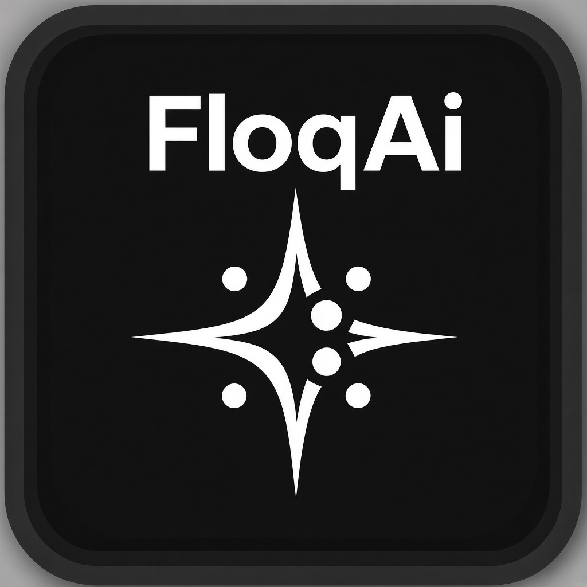
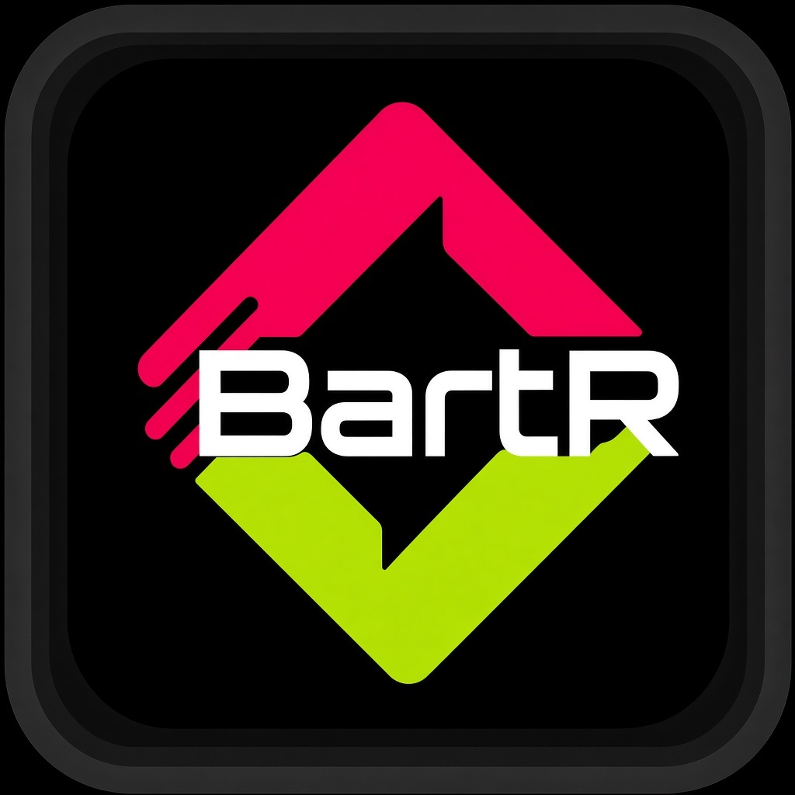
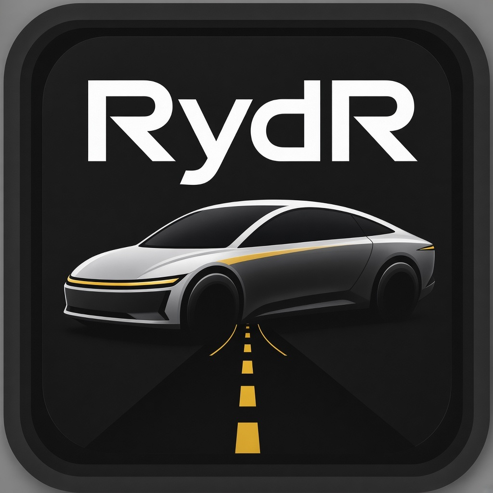

Active: Traditional chrome
Active: Traditional chrome
Toggle Nightlife, Traditional, Black Tiffany, Purple & White, or Black & Dark Green.
Chosen icons swap live via floqr.isSiteChrome / floqr.uiChrome (localStorage).
Active: Traditional chrome
FloqCAST packs: nightlife = V4 silhouette + neon ring; traditional = same layout, charcoal/silver + silver ring, tiffany T. Toggle swaps images/chrome/floqcast-*.jpg.


Proposed traditional tiles for ShoutOut, FloqAi, BartR, RydR. Nightlife column still shows current live marks until you choose nightlife packs.



Fixed pairs — does not follow the toggle. Use to compare chrome languages.


Prep for go-live (not done yet): persist profile.uiChrome, apply via FLOQRChromeScheme on Search tiles,
My Profile toggle, and cache-bust icon URLs. Also see
scheme-icons-demo.html for VIP/FloqCast review history.
Reply which traditional proposals to lock, then go-ahead to wire Search.